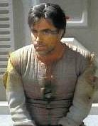

|
Angosiani
|
|
|

 |
Specie di umanoidi che è entrata a far parte della
Federazione nel
2366 di natura non violenta la
cui civiltà, dedita allo sviluppo dell'intelletto, ha combattuto una lunga e
sanguinosa guerra con i Tarsiani. Alcuni individui conosciuti come i veterani
presentano degli impianti elettronici posizionati sulle tempie.
A causa della loro natura pacifica, in occasione del conflitto contro i Tarsiani
gli Angosiani hanno dovuto addestrare dei volontari come guerrieri tramite un
condizionamento psicologico, che ha aumentato la loro resistenza,
l'intelligenza, la forza, la memoria e li ha dotati di un senso istintivo di
conservazione che li fa rispondere con la violenza a qualsiasi pericolo.
Terminata la guerra, i veterani non sono riusciti a reintegrarsi nella società e
il governo angosiano non ha avuto la capacità o la volontà di prendersi cura dei
soldati. Dopo numerosi incidenti, la popolazione del pianeta, timorosa di quello
che i veterani erano capaci di fare, ha scelto di esiliarli nel carcere di
massima sicurezza di Lunar V, posto su uno degli asteroidi del loro sistema
solare.
Nel 2366 l'Enterprise
visita Angosia III in occasione della
domanda di ingresso nella Federazione. Durante l'incontro, Roga Danar, uno dei
veterani più violenti, riesce a fuggire dalla colonia penale e, dopo una serie di
vicissitudini, riesce a portare a conoscenza della Federazione il problema dei
veterani.